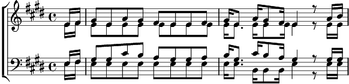

1. Brésilien mon frère d'arme
Sur le parcours du cœur battant.
Faut qui rie avec tes larmes
Ô toi qui pleure avec tes dents.
Viens visiter l'Occident.
Ici, les chanteurs de charme sont morts depuis bien longtemps.
Brésilien mon frère d'arme
Sur le parcours du cœur battant
Faut qui rie avec tes larmes en perlant dedans tes cils
Débarque avec ton Brésil.
2. Brésilien l'amour est rude,
Voici l'herbe on lève les grains
Tu vas nous jouer l'étude, la douce étude du chagrin
Tu vas nous toucher un brin.
Ta guitare plénitude libère nous de nos freins.
Brésilien l'amour est rude.
Voici l'herbe on lève les grains.
Ta guitare plénitude caresse lui le nombril.
Débarque avec ton Brasil.
3. Brésilien la nuit est belle
Sous son grand goût de Carnaval.
Ta musique me ficelle tel un cordon ombilical.
A son ventre de cristal
Dont le pistil n'étincelle que pour mon bonheur bucal.
Brésilien la nuit est belle
Sous son grand goût de Carnaval
Ta musique me ficelle comme un fils à ton grésil
Débarque avec ton Brésil.
Coda:
Débarque avec ton Brésil.
Débarque avec ton Brésil.
Hey !